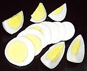
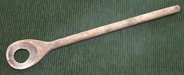
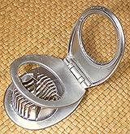

(click to enlarge) |
Boiling Eggs
General Method
|
|
|
Two minute eggs and soft boiled eggs may be served in individual egg cups
for breakfast, but for many other uses, from salads to garnishes, hard
boiled eggs are needed. This method, incorporating current "best
practices", will make any of those.
| | | |

Egg Spoon
This is the ideal utensil for removing eggs
from hot water - it holds the egg but the hot water all escapes. I also
find it very useful for transferring tomatoes from the scalding water
to the cold quench water for peeling. For details see our
Egg Piercer / Spoon / Slicer
page.
Cooking
Hard cooked eggs should be just cooked through and not overcooked or
the yolks become discolored and texture becomes less appetizing.
There are many ways recommended in many books and on many Web pages as
to how to accomplish this, but much of it is bunk. The method given here
follows the latest research and actual comparative testing.
Note: Many sources recommend buying eggs you will hard cook
a week in advance and keep them well refrigerated. This is said to make
them easier to peel. My experience says otherwise. I've had older eggs
that just wouldn't peel, and very fresh eggs that peeled wonderfully.
My experience has recently been confirmed by actually testing by
J. Kenji López-Alt. Some hens lay peelable eggs and some just
don't know how (peelability is probably not a high priority for a
chicken). If you're going to do a big batch, test before need. If they
just won't peel, try a batch from a different farm. Free range eggs
are reportedly the most difficult to peel.
This method will maximize the peelability of hard cooked eggs
- Piercing? Optional: you may want to use an egg
piercer or a large sewing needle to puncture the round end of the
egg where the air sack is. This hole need not be visible to be
effective. This does not materially affect peelability, but does
help keep eggs with invisible cracks from bursting.
- Prepare: Have your cooking pan (I usually use a
large sauté pan when doing a lot of eggs) ready with plenty
of cold water in it. Do Not add salt, vinegar, baking
powder / soda or any other substance you may have heard recommended.
Preferably the pan should be large enough for all the eggs in one
layer, with 1/2 inch of water above the eggs. You can probably get
away with two layers with 1 inch above the eggs.
- Pretreat: This greatly improves peelability. Bring
a small but deep saucepan to a rolling boil. With an egg spoon,
lower eggs, two or three at a time into the boiling water. Let them
stay for about 30 seconds, then remove them into the waiting cold
water in your cooking pan.
- Cooking: On high heat, bring the cooking pan to a
rolling boil. As soon as it is boiling well, turn off the heat.
Leave covered and let stand for 15 minutes - it should still
be around 188°F/88°C. The eggs will be perfectly cooked
through and the outside of the yolks will have none of that
gray-green color. Note: you can do 2 minute
and soft boiled eggs by this method - just pull the eggs sooner.
The exact timing may vary a bit depending on your pan, amount of
water and size of your eggs - you'll just have to experiment.
- Peeling: I've read much advice on peeling eggs, and
most of it doesn't work at all. Some say the eggs must be cold, but
the eggs I get tend to be totally unpeelable cold. Here's what
works for me.
- Pull an egg from the hot water (easiest using a wooden egg
spoon).
- Give the egg a quick dash under cool running water so you can
handle it.
- Crack the shell lightly on a hard flat surface in several
places, just hard enough to break the membrane under the shell.
Caution: strike or massage gently, because if you are
rough enough to separate the outer two layers of egg, peeling
is hopeless.
- Many say to peel under cold running water, but I get the best
results peeling the egg as hot as I can handle it.
- If the water the remaining eggs are in drops down below
150°F/66°C, I start having trouble peeling, so I put the
pan back on the stove and bring it back up to 180°F/82°C.
- Cooling: If you want your peeled eggs uniformly
round with no flat spots, cool them floating in cold water.

Egg Slicer
Slicing eggs with a knife is an exercise in frustration. The eggs
stick to the sides of the knife, the yolks smear and crumble, and the
whites break. The wires of the Egg Slicer have no sides to stick to.
It cuts eggs into slices or wedges without difficulty or mess. For
details see our
Egg Piercer / Spoon / Slicer page.
NOTES:
- U.S. measure: t=teaspoon,
T=Tablespoon, c=cup, qt=quart, oz=ounce,
#=pound, cl=clove in=inch, ar=as required
tt=to taste
gbd_eggboil1* 080209 r 140107 r 151218 var -
www.clovegarden.com
©Andrew Grygus - agryg@aaxnet.com - Linking to and
non-commercial use of this page is permitted.